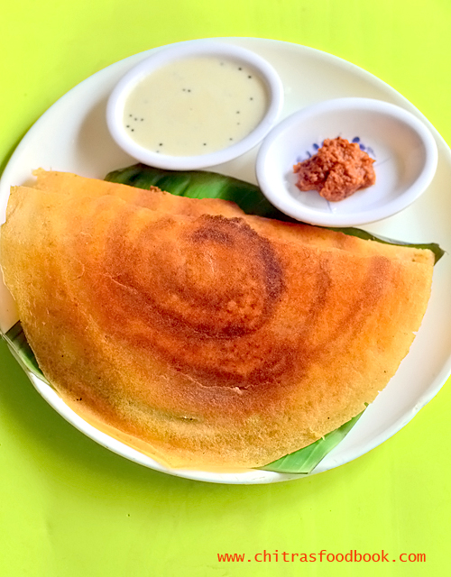

Dosa Recipe

Ingredients
- 1 cup rice (preferably parboiled)
- 1/4 cup urad dal (split black gram)
- 1/4 teaspoon fenugreek seeds (optional)
- Salt to taste
- Water (as needed for batter)
- Oil or ghee (for cooking)
Instructions
- Wash and soak the rice and urad dal (along with fenugreek seeds) separately for at least 4-6 hours.
- Drain the soaked ingredients and blend them together in a mixer or grinder, adding water gradually to form a smooth batter.
- Transfer the batter to a bowl, cover, and let it ferment overnight or for 8-12 hours until it rises.
- Once fermented, add salt to the batter and mix well. Adjust the consistency with water if needed.
- Heat a non-stick pan or griddle on medium heat. Grease lightly with oil or ghee.
- Pour a ladleful of batter onto the center of the pan and spread it in a circular motion to form a thin layer.
- Drizzle a little oil or ghee around the edges and cook until the bottom is golden brown.
- Flip the dosa and cook for another minute. Remove and serve hot with chutney or sambar.
Dietary Restrictions
This recipe is gluten-free and vegetarian. For a vegan version, use oil instead of ghee.
Back to Recipes